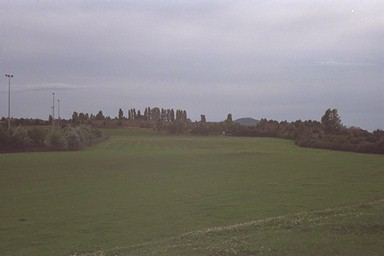

 This sadly misnamed facility is in Church Road, Wrockwardine Wood. The canal ran in a big lefthanded loop where these playing fields now are, to cross a long-since-culverted brook flowing down from the Cockshutt.